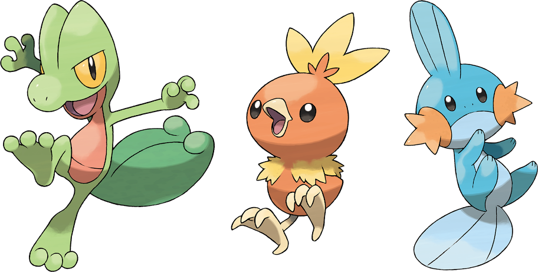

Começo:
Um Novo Começo, A viagem.
Um Bairro novo com pokemons incriveis e novos, voce acaba se mudando com sua mãe para uma nova casa, coicidentemente, um de seus vizinhos é ums dos melhores amigos de seu pai, e tambem, um pesquisador pokemon, coicidentemente você o salva de um pokemon selvagem, o pesquisador um velho amigo de seu pai, enxerga o mesmo talento que observou em seu pai, ele entende que você esta pronto para o seu primeiro inicial, qual você escolhera?
iniciais:
Os inicias de Pokemon emerald sao os três pokemons:
-
Torchic - Mudkip
- Treecko
